Shift handovers
Create, confirm and complete handovers with category, priority and status. Changes are recorded as revisions; entries remain traceable.
Self-hosted · Station-specific · Offline-capable in the LAN
Wachwerk consolidates shift handovers, daily tasks, checklists, calendar and coffee fund in one station logbook. It runs on a server at the station, the data remains there – without a cloud account and without external scripts.
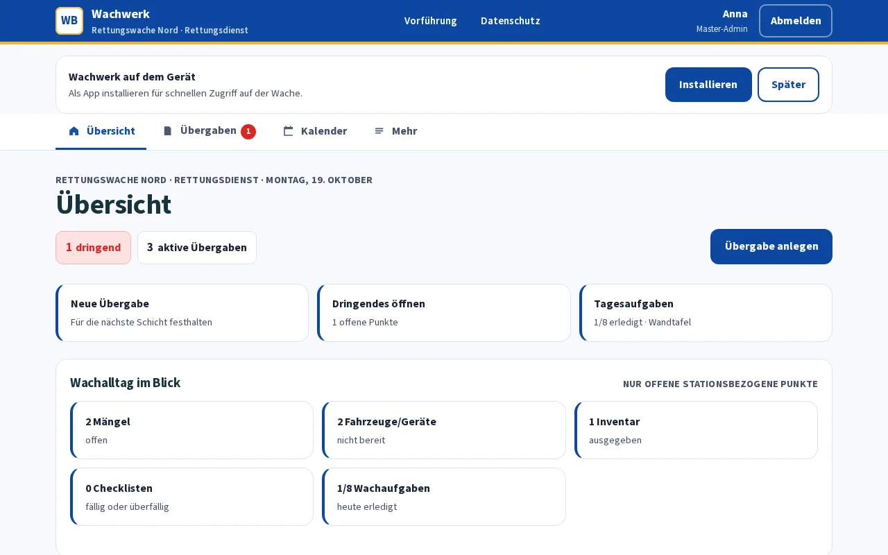
The following modules are implemented in the repository and covered by the test suite. They organise the internal operation of a station – not emergency response.
Create, confirm and complete handovers with category, priority and status. Changes are recorded as revisions; entries remain traceable.
Tasks by daily routine, day of the week and additional tasks. Completion applies per day and shift; the wallboard shows the status of the current shift.
Checklists with individual items, recurrence schedule and completion note – such as for vehicle takeover or station inspection.
Maintain appointments, duty meetings and training sessions. Public holidays are taken into account; an ICS subscription makes the calendar readable in standard calendar apps.
Continuous ledger with amounts, reason and contra entry instead of an editable total. Postings are preserved as a chain and are role-specific.
Internal notices and announcements for the station – visible to all members, managed by the shift lead or administration.
Defects with status workflow and optional photo, vehicles and equipment with readiness status, inventory with issue and return. All station-specific.
Enabled per station: vehicle checks and disinfection with contact time, medical devices with STK/MTK deadlines and instructions, supplies with batches, expiry dates and minimum stock. The overview shows what needs attention.
Versioned work instructions with personal read confirmation, plus a full-screen view for the monitor in the vehicle bay.
Create accounts, activate via invitation, assign roles and revoke access. Security-relevant changes end up in the audit trail.
Local accounts with password, optional TOTP and Passkeys. QR login confirms a browser session on the staff device – short-lived and bound to the station.
Setup wizard for station name, address, time zone, roles and modules – accessible only with a one-time bootstrap token, no longer available thereafter.
Versioned JSON API with token scopes for the open-source Flutter client. The same role and station limits apply there as well.
Daily local PostgreSQL dumps with a restore test as well as optional WebPush dispatch from a dedicated outbox.
All captures originate from the locally launched application with a test database and fictional accounts. No montage, no retouching, no third-party screenshots. Persons, stations and records are synthetic.
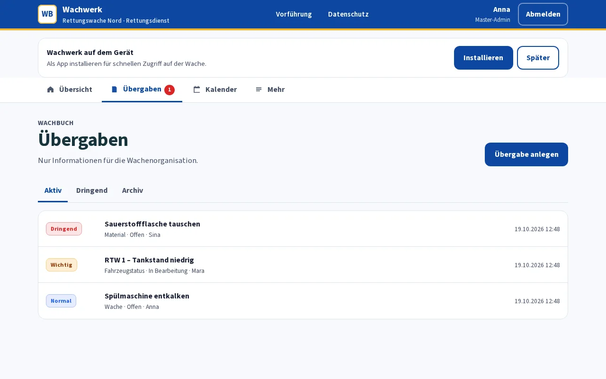
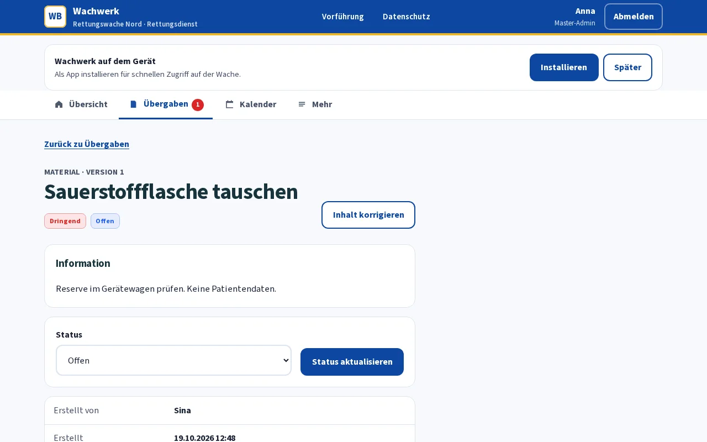
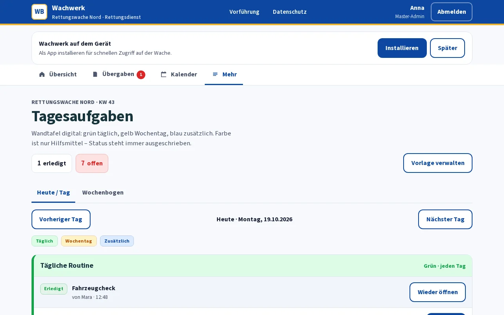
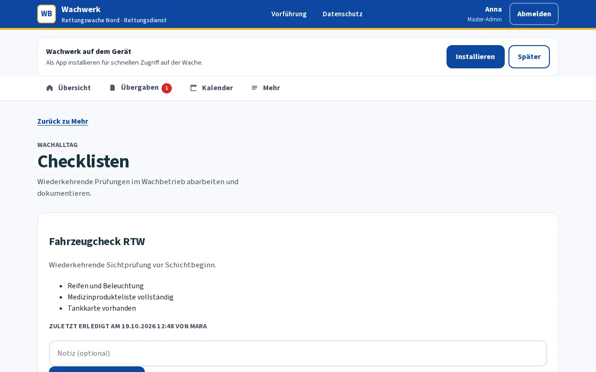
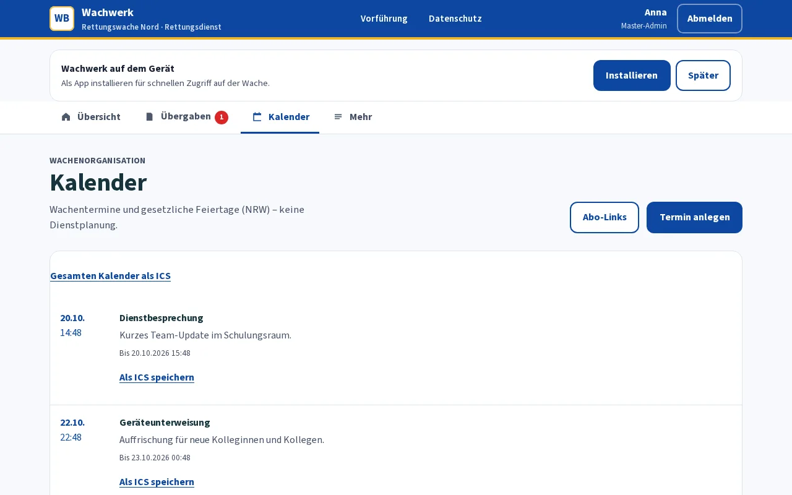
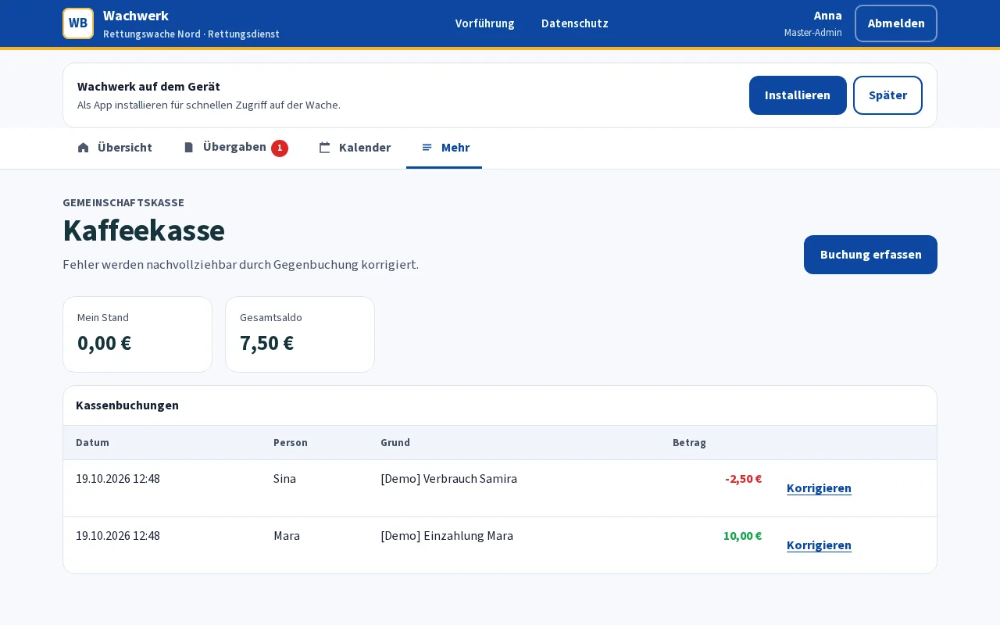
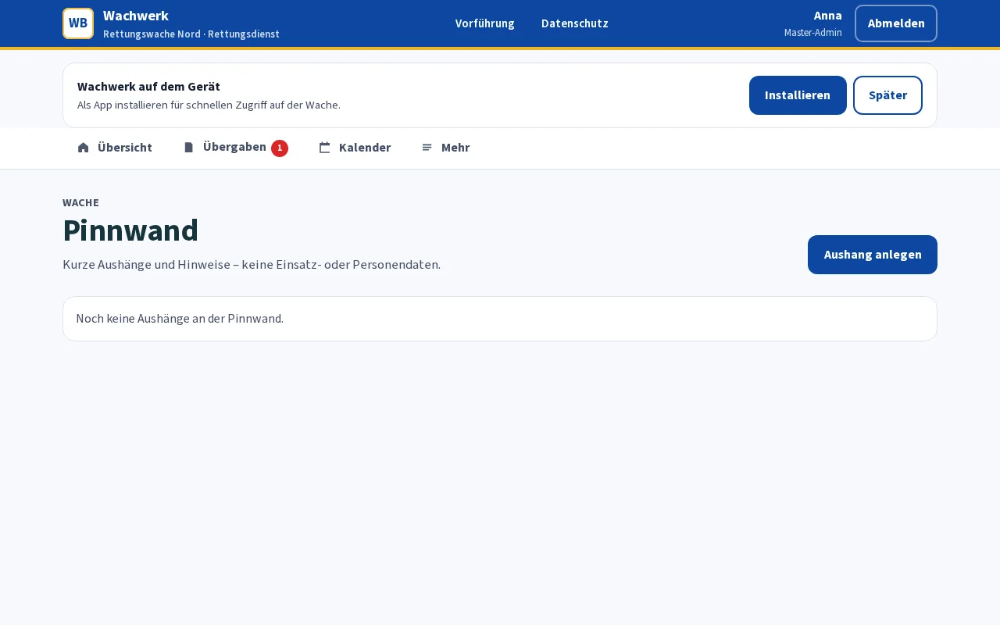
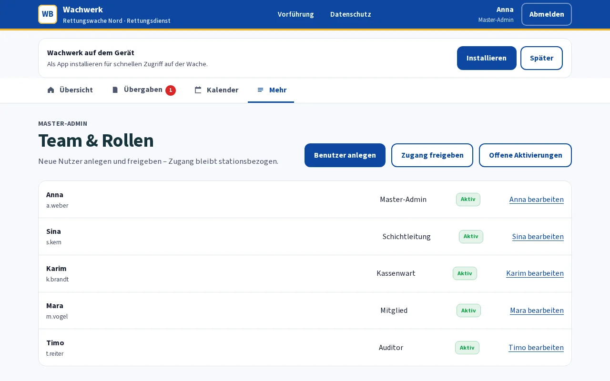
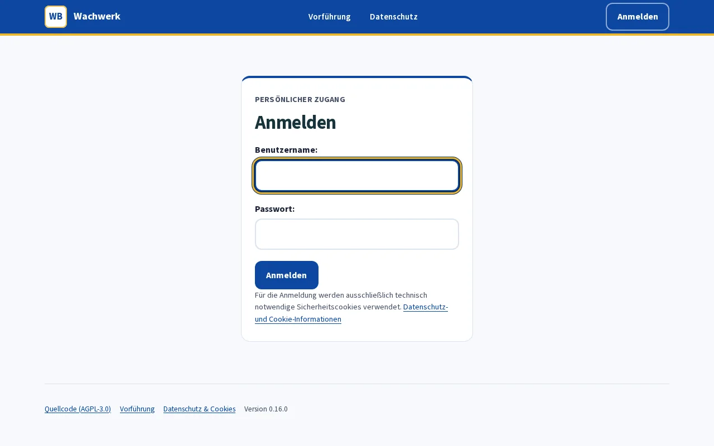
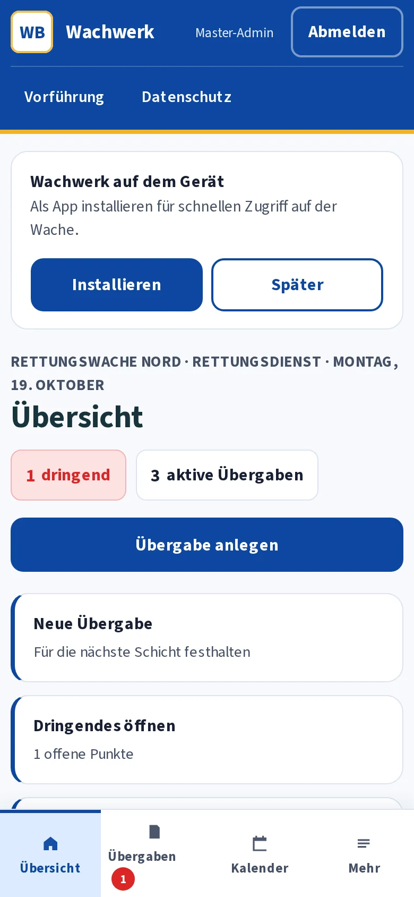
Capture basis: Chromium, local server on 127.0.0.1, test accounts without real persons. No capture contains login tokens, QR secrets or activation links. All screenshots show the German-language interface of interim release 0.17.0; labels inside the application remain in German.
Wachwerk is a modular Django monolith with PostgreSQL, served via Gunicorn and WhiteNoise. Docker Compose starts database, application, worker and backup as separate services.
No SaaS, no multi-tenancy. One instance belongs to one station. There is no central operator instance, no cloud login and no telemetry in the core path.
Git, Docker Engine and Compose v2 are prerequisites. All steps run on the station server; internet access is only required to pull the images.
git clone https://github.com/Katschko-IT/Rettungswache-Wachbuch.git
cd Rettungswache-Wachbuch
cp .env.example .envIn .env, replace all placeholders with independent random values, for example using openssl rand -hex 32. Do not use values from the example. The backup directory must be writable for the database user.
sudo chown 70:70 backups
docker compose up --build -dSet SETUP_BOOTSTRAP_TOKEN once outside the application and call /setup/. The wizard guides through station name, address, time zone, roles and modules. Remove the token afterwards – without the token, the route is not present.
docker compose exec web python manage.py createsuperuser
docker compose exec web python manage.py grant_station_admin BENUTZERNAMEThe master admin creates further accounts under /team/ or via invitation; permissions remain station-specific.
The container intentionally binds only to 127.0.0.1:8090. Place a reverse proxy with TLS in front for mobile phones and station terminals, and configure ALLOWED_HOSTS as well as CSRF_TRUSTED_ORIGINS with the local address actually used.
The station server is the authority: login, roles, forms, and assets are served locally. If the WAN connection fails, core operations remain usable in the LAN – login, roles, tasks, checklists, and QR display are verified by tests with blocked external socket, DNS, and URL calls.
The prerequisite is an accessible server and a functioning local network. A station server that would only be accessible via a cloud does not fulfil this model.
/healthz/ for monitoringLocal HTTP startup for testing only. Without TLS, SECURE_COOKIES=false must be set deliberately. For genuine operation, TLS with a reverse proxy remains the intended approach.
Wachwerk is an organisational station logbook. It replaces neither incident management nor staff planning, and makes no statement regarding the legality of any specific operation.
| Area | Status |
|---|---|
| Patient and incident data | Not intended. No field for health, diagnostic, alerting, or incident data; such content does not belong in the station logbook. |
| Duty and staff planning | Not included. No shift rotas, time accounts, payroll, or performance appraisal. |
| WAN failure with accessible LAN | Core operations function; verified by tests with blocked external calls. |
| Mobile phone without signal or server switched off | Not implemented. There is no client database, no outbox, and no offline login; the PWA merely displays an offline page. |
| External sign-offs | Open: real passkey authenticator, WebPush delivery, ICS retrieval against a genuine third-party host, TLS/proxy operation, disaster recovery. |
| Data protection and employee participation | Technical measures are documented; data protection impact assessment, deletion periods, and operational approval rest with the operator. |
The project is not a product promise. The following status separates what is implemented and tested from what can only be proven in operation.
No production approval. This page describes the development status of the repository. It is not an approval for operation and not a confirmation of compliance requirements.
No. Login, roles, forms, and assets are served locally. Only optional features such as enabled RSS feeds, waste calendar, geocoding, or WebPush require an outbound connection – and can be disabled.
As long as the station server is reachable in the LAN, core operations continue. If the server itself fails or the mobile phone has no network, there is no offline write operation: no local database, no outbox, no subsequent synchronisation.
The browser displays a short-lived request. An already logged-in staff device confirms it – with a fresh login, TOTP, or passkey. The QR code contains no password and no permanent token; the request is bound to the station and browser session and expires. This does not replace two-factor authentication, but shifts confirmation to the device.
The client is open source (AGPL) and uses the versioned JSON API with token scopes. It is subject to the same role and station boundaries. It is not required for web operation.
No, the project makes no statement on this. Documented are technical measures and open points. An assessment requires examination of the specific station, its retention periods, and operational employee participation.
The server code is licensed under AGPL-3.0-or-later. Anyone operating a modified version as a network service must provide the corresponding source code. The open-source components used and their licences are documented in the repository.